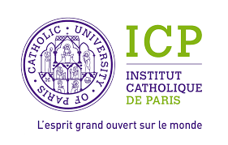
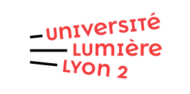

01
Corps, socialisation, violence et apprentissages
Comment des apprentissages incorporés transforment-ils les façons de sentir, d'agir et de donner sens à la violence ?
Comment des apprentissages incorporés transforment-ils les façons de sentir, d'agir et de donner sens à la violence ?
Comment les mondes combattants produisent-ils, négocient-ils ou déplacent-ils les rapports sociaux de sexe ?
Comment un corps, une réputation ou une performance acquièrent-ils de la valeur — symbolique, sociale puis éventuellement économique ?
Le socle méthodologique transversal aux trois axes.
Recherches en cours, terrains, écritures et projets.
Une enquête sur les carrières qui se construisent dans des espaces où la professionnalisation ne permet pas nécessairement de vivre de la seule activité sportive : comment ces sportifs tiennent-ils ensemble ce qui les fait vivre et ce qui les fait combattre ?
Un travail d'écriture consacré aux trajectoires de vie recueillies pendant la thèse : comment l'adversité se rencontre, se traverse et se retravaille, entre socialisation et recompositions de soi.
Le manuscrit doctoral est en cours de remaniement pour devenir un ouvrage : resserrer la démonstration, ouvrir l'écriture et rendre l'enquête lisible bien au-delà du cercle des spécialistes.
À partir des situations ordinaires d'entraînement, ce travail interroge la manière dont discipline, interactions et apprentissages corporels organisent des formes de gouvernement des corps, tout en laissant apparaître des marges d'autonomie, de négociation et d'appropriation.
Un travail consacré à la figure du chercheur organique et aux effets produits par une forte proximité avec le terrain : accès, loyautés, contrôle de la parole, relations d'enquête et conditions de production des matériaux.
Développement de l'un des concepts centraux issus de mes recherches : la manière dont l'adversité peut être travaillée, incorporée et convertie à travers l'expérience combattante. Ce travail est développé dans le cadre d'un ouvrage collectif.
Une recherche sur les formes de mise en valeur des corps combattants : reconnaissance, réputation, profits symboliques et possibilités — toujours incertaines — de conversion économique de la valeur sportive.
Sociologie · corps · violence · genre · SHS appliquées · économie · histoire
Ethnographie · méthodes qualitatives · mémoire · analyse de matériaux
Management · événementiel · professionnalisation · conduite de projet · MMA




Trois éditions successives accompagnées : un événement sportif de grande ampleur, entre valorisation du territoire, partenariats et gestion événementielle — avec la continuité d'encadrement que cela suppose.
Un même groupe accompagné deux années de suite, d'abord en Master I puis en Master II, sur deux éditions successives de cette compétition internationale universitaire de tennis : montée en responsabilité, continuité du tutorat, coordination d'acteurs et professionnalisation en situation réelle.
Un événement cycliste et gastronomique conçu et organisé par des étudiant·es de Licence 3 à Châlons-en-Champagne.
Un gala consacré à la boxe thaïlandaise et au MMA, réunissant clubs et associations locales, avec des combats professionnels.
Une compétition nationale de skateboard à Reims, accompagnée d'initiations et menée en partenariat avec un club local.
Couverture médiatique · France 3 Grand Est →Sollicité en 2026 comme expert dans le cadre d'un numéro spécial consacré aux dynamiques sociales des carrières sportives contemporaines.
Organisation et animation de manifestations scientifiques : participation aux comités scientifiques et d’organisation, préparation des rencontres et co-rédaction d'appels à communication. Ce travail comprend également l’expertise des propositions reçues et la participation aux différentes étapes qui structurent la préparation scientifique des manifestations.
La conférence enregistrée lors des Journées de Réflexion et de Recherches sur les Sports de Combat et les Arts Martiaux, où sont présentés les principaux résultats de la thèse.
Un retour sur quelques éléments biographiques — notamment ceux qui ont donné l'envie, sinon poussé, à faire de l'ethnographie un métier à plein temps.
De la médiation scientifique en festival : porter l'enquête ethnographique hors les murs et discuter, avec un public non académique, des significations sociales du combat et de la violence.
Dans le cadre du projet « Éducation par corps à la citoyenneté », un travail d'écriture mené avec les adolescent·es d'une Maison Familiale Rurale, qui ont décidé d'écrire pour exister.